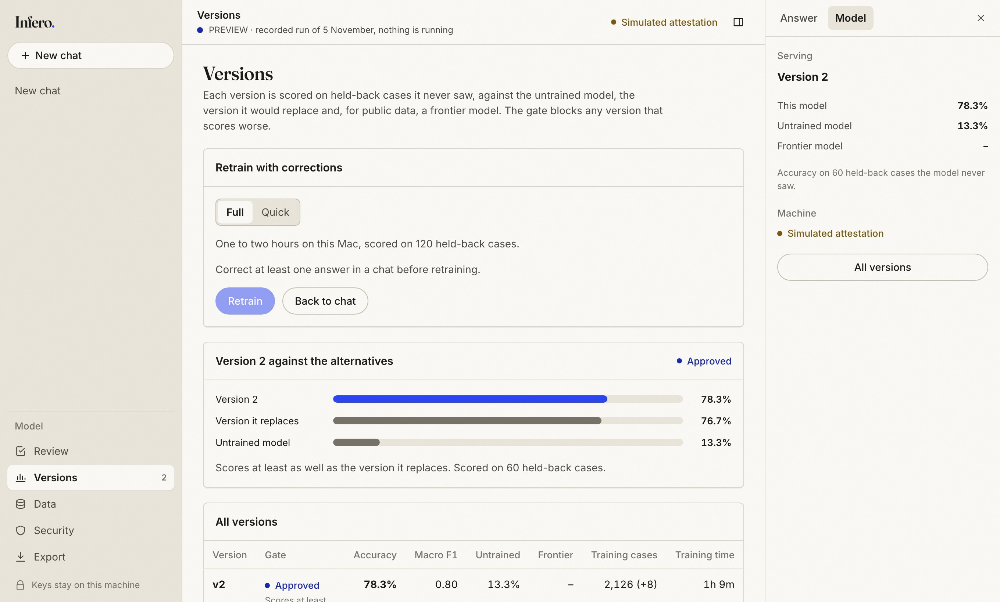

Four changes to training
Twice as long, longer inputs, 600 more cases per label, a 4B model.
A small open model trained on your company's decisions, retrained on every correction, and yours to keep. Infero can't read your data.
Early prototype, tested on public data. No customers yet.

A rented model reads every record you send it. Infero can't, even if its own server is breached.
Reads your records
Holds the keys and encrypts every file.
Can't read them
Stores ciphertext and scores.
Reads them after proof
Proves its code before your machine releases a key.
The confidential GPU version is built and hasn't run yet.
A rented model can be repriced, retired or sold to your rivals, and it never learns from your corrections.
600 to 1,200 new public cases per task, with the rules fixed before anything was scored.
Ours is the mean of three training runs. Better means the 95% interval excludes zero. Given no examples, Opus lost on medical abstracts and 6-label complaints and tied the rest.
Our model answers what it's sure of and Opus takes the rest. Every pairing we tested matched Opus.
less Opus spend on contract clauses. Our model was sure of 95% of 1,200 cases.
of Opus per 1,000 support tickets, down from $7.13. The pair beat Opus in two of three runs.
saved on consumer complaints, where most cases still went to Opus.
Support figures come from dry-run pilots on public data, 13 and 14 November. Training one model costs $0.17 to $1.62 on a rented GPU.
Eight ways to make the model itself better, each tested on cases it hadn't seen.
Twice as long, longer inputs, 600 more cases per label, a 4B model.
Identical accuracy on both complaint tasks.
It removed the cases that teach close labels apart.
Beat an average copy, not the best one, at three times the cost to serve.
A clear gain on 12-label complaints only.
On public data, model size and training tricks don't move accuracy much. Labels checked by a company's own experts are next, and a first pilot provides them.